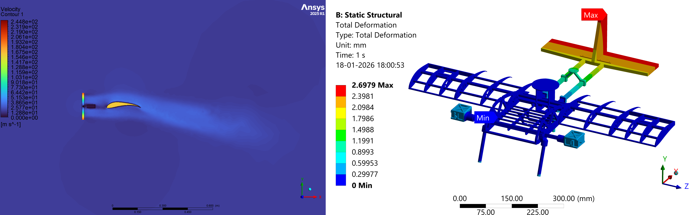

Full-configuration CFD of a next-generation hybrid UAV: rotating MRF subdomains, transition-regime wake interaction, and induced-drag quantification — developed with Team Arrow as part of SAE International Aerodesign.

VTOL–fixed-wing hybrid UAVs combine the vertical-landing envelope of a multirotor with the range of a fixed-wing aircraft. Their critical flight phase is the transition — during which propeller wakes, lifting-surface downwash, and free-stream flow interact in ways that degrade lift-to-drag ratio if not understood.
Characterise the aerodynamic behaviour of a full-configuration hybrid UAV during hover, transition, and cruise; quantify induced drag and pitching moment across the transition envelope; and propose geometry refinements to mitigate adverse wake interactions.